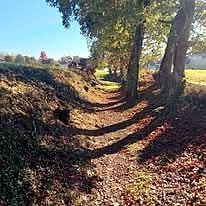
Le chemin Pachera
Depuis le chemin Cametot, il remonte vers le chemin de Tâche en évitant la route, avec la possibilité d'enchaîner sur le chemin Peyraube.
Voir le détail →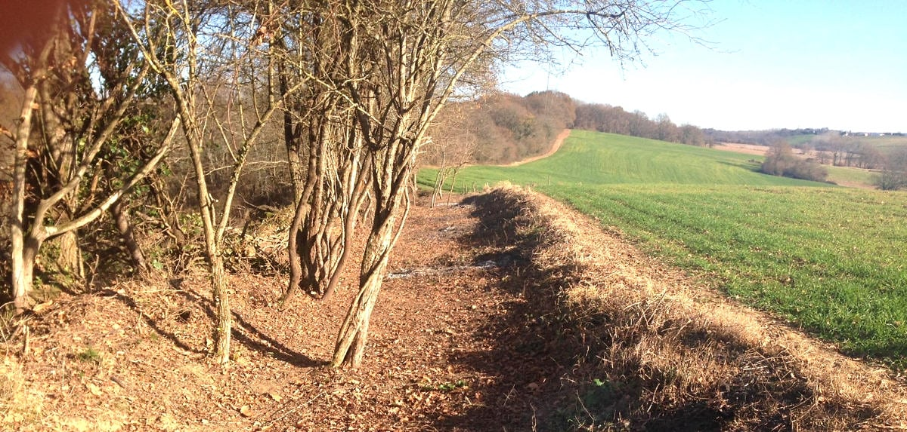
L'association Au bout du chemin regroupe des habitants de Castétarbe passionnés de marche et de nature. Nous entretenons, balisons et faisons connaître le réseau de sentiers qui traverse notre quartier et ses environs.
Chaque année, nous organisons des randonnées guidées, des journées d'entretien des chemins et des actions de sensibilisation au respect de l'environnement. Rejoignez-nous pour préserver et partager ce patrimoine naturel unique.
Dix sentiers entretenus par l'association pour découvrir Castétarbe à pied, loin des routes.

Depuis le chemin Cametot, il remonte vers le chemin de Tâche en évitant la route, avec la possibilité d'enchaîner sur le chemin Peyraube.
Voir le détail →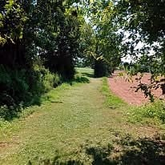
Il relie plusieurs chemins sans passer par la route. Il démarre du chemin Mesplé ou du chemin de l'école ; des panneaux en bois indiquent la voie.
Voir le détail →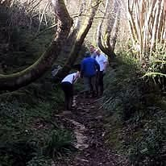
Dix mois de travail pour redonner vie à ce chemin qui relie le chemin Larroque au chemin Touzaa. Il alterne les passages à découvert dans les champs de maïs et une sente sous une voûte de châtaigniers.
Voir le détail →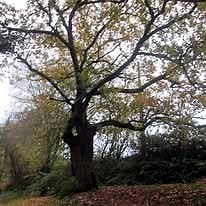
Le tout premier chemin nettoyé par l'association. Il part de l'école de Castétarbe pour rejoindre le chemin Pouyanne, avec une bifurcation possible vers le chemin de Menain.
Voir le détail →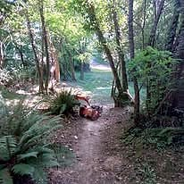
Il rejoint le chemin de Touya dans la forêt, en descendant au milieu des bambous depuis le chemin Ménain.
Voir le détail →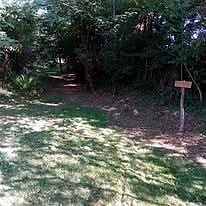
Actuellement en chantier : il reliera la route vieille au chemin Pouyanne, avec une remontée possible vers le chemin de Tâche via le chemin Peyraube.
Voir le détail →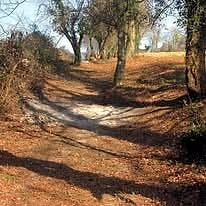
On l'atteint en remontant le long d'un champ, juste après le petit lac ; il permet de bifurquer pour redescendre vers le chemin du Brana.
Voir le détail →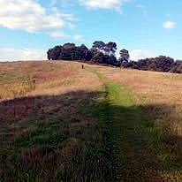
Le chemin de crête du Barat du Rey, point culminant du secteur (~169 m), avec une vue imprenable sur les Pyrénées.
Voir le détail →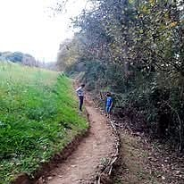
Un chemin de terre qui descend jusqu'à un petit lac, que l'on contourne par la droite avant de poursuivre.
Voir le détail →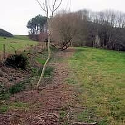
Depuis la route, il s'enfonce dans le bois puis grimpe pour rejoindre les hauteurs, en direction de la crête du Barat du Rey.
Voir le détail →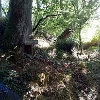
Cliquez sur un chemin pour ouvrir sa fiche.
Trois parcours préconçus par l'association pour découvrir Castétarbe à votre rythme.
Une boucle familiale au fil de la rivière, à travers les champs de maïs et sous une voûte de châtaigniers.
Départ : école de Castétarbe.
Chemins traversés
chemin de l'école → chemin de Touzaa → chemin des Barricots → chemin Larroque (le long de la rivière) → chemin Touya → retour à l'école.
Elle emprunte la majorité des chemins réhabilités et passe par les crêtes du Barat du Rey, avec une vue imprenable sur les Pyrénées.
Départ : école de Castétarbe.
Le grand parcours qui traverse tous les chemins remis en état. Au nord, entre Mounicq et le Barat du Rey, une crête offre un panorama parfait sur les Pyrénées.
Point culminant : le Barat du Rey (169 m), avec vue sur les Pyrénées.
Départ : parking de la Salle Piquemal.
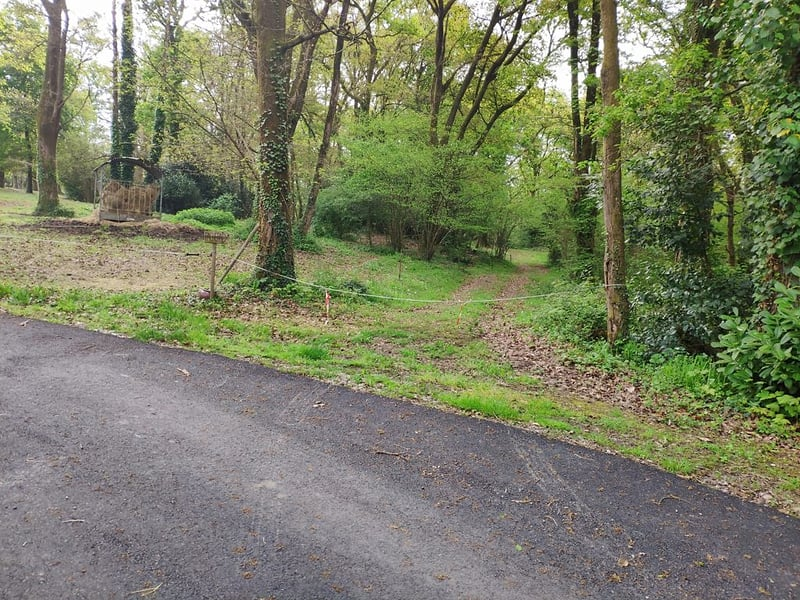
L'association « Au bout du chemin » redonne vie aux anciens chemins de Castétarbe, longtemps laissés à l'abandon. Depuis les premiers sentiers rouverts en 2014, ses bénévoles nettoient, balisent et entretiennent un réseau de chemins qui permet de relier le village et de se promener sans emprunter la route.
Du premier chemin de Touya dégagé aux dix mois de travail qu'a demandés le chemin des Barricots, chaque sentier est le fruit d'un travail patient et collectif. Notre mission : entretenir et baliser les chemins, accueillir les randonneurs, faire connaître le patrimoine naturel de Castétarbe et rassembler les habitants autour du respect de la nature et du vivre-ensemble.
Prochain rendez-vous et retour sur les manifestations passées.
Trail chronométré 15 km (15 €) ou 10 km (10 €), 350 m D+, départ 9h30. Marche 10 km (7 €), départ 9h35. Boisson offerte, buvette, grillades, frites.
En partenariat avec le Foyer Rural de Castétarbe
Une question sur un sentier, envie de devenir bénévole ou de participer à une randonnée ? Écrivez-nous, nous vous répondrons rapidement.
foyercastetarbe@gmail.com